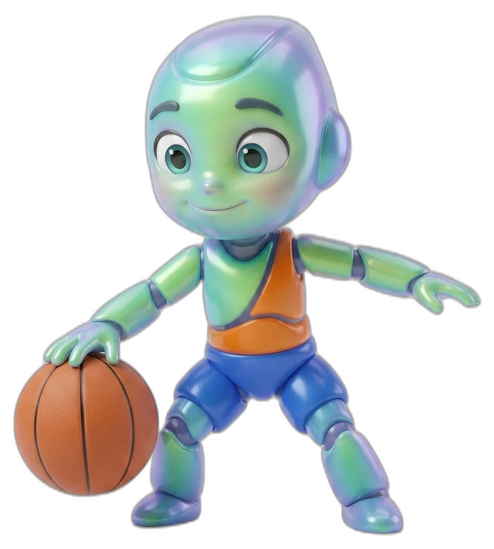

Community Programmes
Outreach and engagement bringing Proteus sport and physical development into the wider Canterbury community. Open sessions, club partnerships, and community events.

What we offer
How community programmes work
Community programmes bring the Proteus development pathway to venues and organisations across Canterbury. Whether it's open sessions at local sports grounds, partnerships with community clubs, or events at community centres, the same quality coaching and developmental framework applies.
These programmes are designed to reach children who might not access sport through schools or organised clubs, ensuring every child in Canterbury has the opportunity to develop through movement.
Frequently asked questions
Are community sessions open to everyone?
Yes. Community programmes are open to all children aged 2–12 in the Canterbury region. No prior experience or membership is required.
How can our club or organisation partner with Proteus?
Contact us to discuss partnership opportunities. We work with sports clubs, community organisations, and local councils to deliver programmes that fit your community's needs.